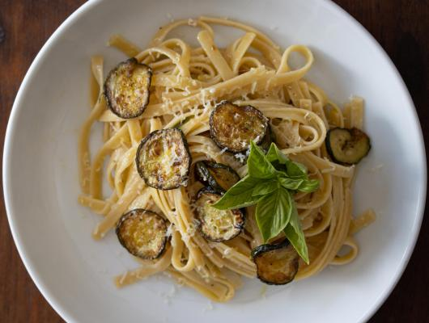

Zucchini Provolone Pasta
About
Zucchini Provolone Pasta. Summer bounty is in our fresh vegetables and fruits which are gracing our grocery stores and fresh farmers’ markets. Zucchini is one of our favorites as well as being one of the most versatile, in my opinion, vegetables.
And then there is cheese. A day without cheese for me is like a day without coffee or ice cream, or salad, you catch my drift. Smoked provolone is one of my favorites. Not easy to found thus when the market has some, it comes home with me.
Put to good use with this recipe, the provolone adds some extra depth to the pasta. As it melts it created a wonderful cream with envelops the pasta with lots of flavors.
Ingridients
- 1 pound fettuccine pasta
- 2 tablespoons olive oil
- 3 zucchini, cleaned and sliced in ¼ inch rounds
- 2 garlic cloves, peeled. and core removed
- 2 tablespoons grated parmesan. cheese
- 1½ cup smoked provolone cheese grated with no lumps
- Salt and Pepper
- Basil leaves (optional)
Preparation
Cook in a large skillet over medium-high heat, add the olive oil with the garlic, and bring to warm hot but not smoking. Add the zucchinis and cook until golden turning them over often. Remove the garlic as soon as it turns golden and discard
Meanwhile, cook the pasta in a large pot of salted water and remove 2 minutes prior to al dente according to packaging cooking time. Add them to the large skillet with the zucchinis with the help of kitchen thongs.
Add all the cheese to the skillet. Add some water to slowly continue the cooking and melting the cheese. Continue stirring until all the cheese is melted and the pasta is ready. Add more cooking water as you go along to keep the pasta moist
Grind a couple of rounds of black pepper, salt if needed, and serve hot.
Optional: cut up pieces of basil and more provolone